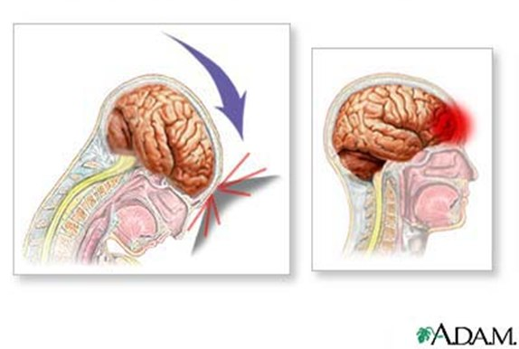
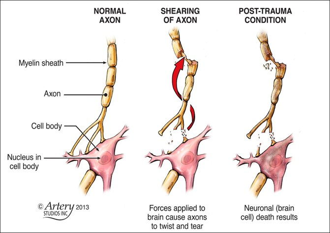
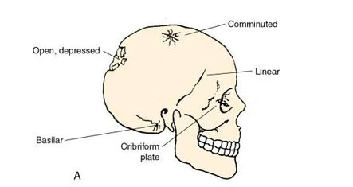
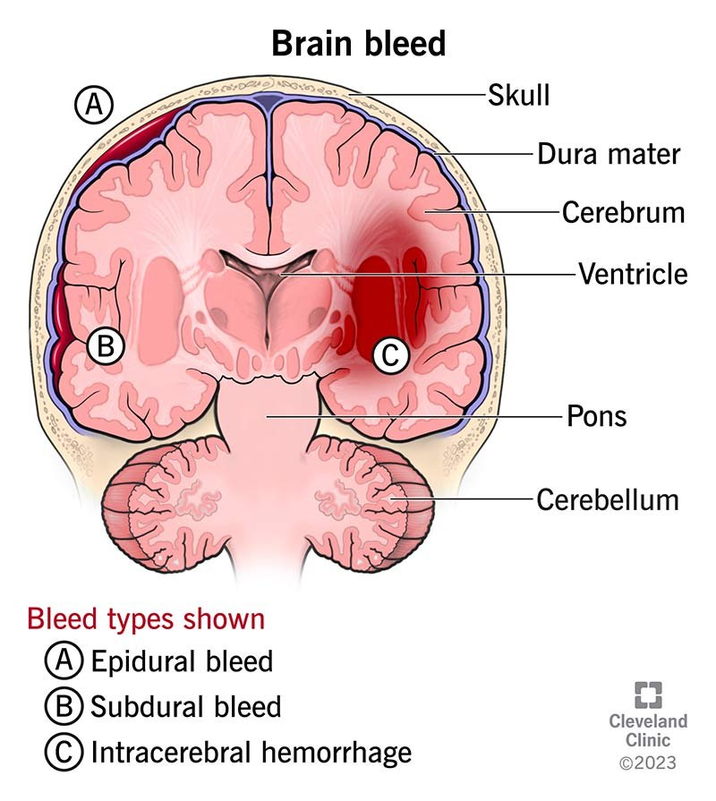
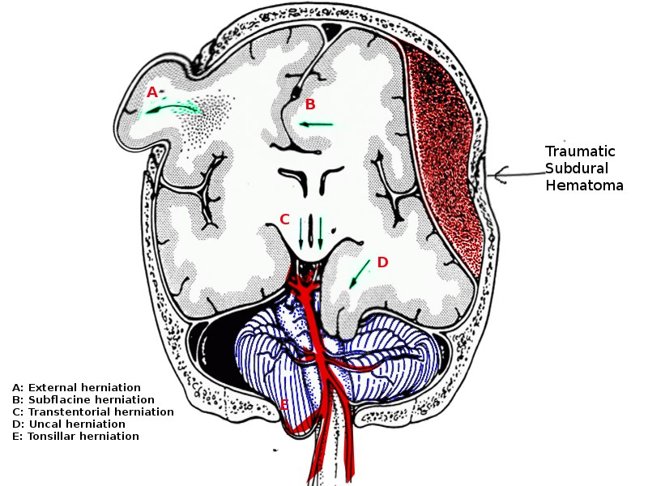
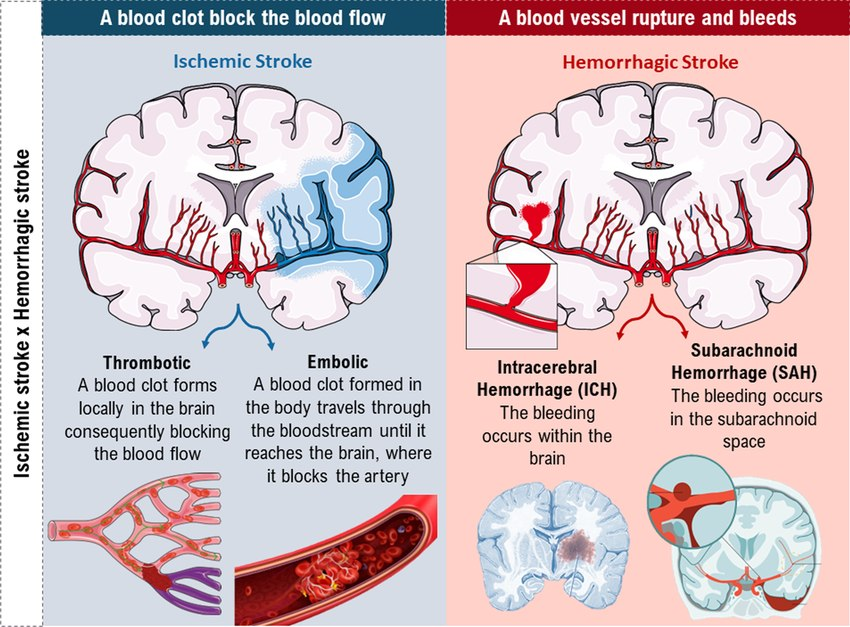

Mechanical disruption of brain tissue from an external impact or injury to the head. A catch-all term for anything that damages the brain.
Leading cause of trauma-related death in people younger than 45.
Highest risk: males, children under 4, young adults 15 to 19.
Leading cause: falls. Then unknown or other, struck by or against, motor vehicle crashes, assaults.
Survival depends on prompt treatment of the primary and secondary injuries.
Three Mechanisms of TBI
Mechanism
What Happens
Acceleration and deceleration
Acceleration: a moving blunt object strikes a stationary head, transferring injury to the brain along a linear path.
Deceleration: the brain rebounds and is injured on the opposite side.
Two impacts, two areas of the brain: the primary impact and the secondary one from the rebound.
Example: a passenger's head hits the dashboard, then the back of the seat.
Rotational
The force transfers its energy to the brain in a non-linear fashion. The head rotates on its axis.
The brain and its cells twist: shearing of the nerve cells.
Example: a boxer hit in the face, the head turning sharply.
Penetrating
A foreign object invades the intracranial space.
Can affect multiple areas of the brain: it may go all the way through. Think comprehensively about what to expect.
Examples: a bullet, a knife, a falling object.

Acceleration and deceleration: the impact on one side, the injury on the opposite side.

Rotational injury: shearing of the nerve cells.
Pathophysiology of TBI
Skull Fractures
Often with a scalp laceration. Very mild to extremely severe, open or closed.
The scalp is very vascular and bleeds a lot: scalp bleeding is not a great indicator of severity.
Not common: the skull has a really high compressive strength and is somewhat elastic.
When one happens, a significant risk of a true TBI: brain tissue compromised.
Basilar Skull Fracture
A linear (straight-line) fracture at the base of the skull.
Leads to meningitis more quickly than other open fractures.
Watch for CSF leaks from the ears and nose: a dural tear, a significant risk.
Basilar skull fracture, known or suspected: no NG tubes, no suctioning through the nose, nothing in the ear. The base of the skull is compromised, so an NG tube could go into the brain.

Types of skull fracture. The basilar fracture is at the base of the skull.
Primary Brain Injury
What happened: concussion, contusion, penetrating injuries, diffuse axonal injury.
Little can be done for it, unless there is an active bleed or a skull fracture to repair.
Secondary Brain Injury
A biochemical consequence of the primary injury, in response to it.
Inflammatory response, leading to further cerebral edema. Increased vascular permeability, a bad sign anywhere: cells are dying.
Free radicals overproduced: they further damage brain cells and decrease cerebral perfusion.
Decreased cerebral perfusion is the primary driver of secondary injury.
Treatment aims to prevent the secondary brain injury. There is no medication that stops cerebral edema from a concussion.

Three bleeds: (A) epidural, (B) subdural, (C) intracerebral hemorrhage.
TBI Management
Management
What to Know
GCS as a guide
Used very frequently: is the GCS the same, worse or better?
Often driven by the motor and eye responses: a severe TBI is often intubated.
Airway and oxygenation
The priority.
GCS below 8 or 9: can the patient maintain the airway?
Prevent hypoxia: oxygenating, as well as maintaining the airway, prevents further secondary damage to the brain.
Monitoring
CPP, ICP and hemodynamics, crucial throughout.
Increased ICP is a result of TBI. The worry is the CPP: is the brain perfused adequately?
Increased ICP
Managed the same way as any increased ICP: the secondary injury causes cerebral edema, with no place in the skull for the swelling to go.
Temperature
Prevent fever: always.
Hypothermia may improve outcomes: targeted temperature management cools the patient. Cold slows the cells down, and the overwhelming inflammatory response with them.
Not well studied or understood.
Nutritional support
Crucial in severe TBI.
Hypermetabolism is a common response to TBI: higher nutritional needs.
Surgical intervention
Depends on the severity and the ICP.
Fracture repair.
Burr holes for subdural hematomas: help decrease the ICP.
Craniectomy: a resection of the skull, to prevent herniation. Gives the swelling somewhere to go.
A catastrophic consequence of increased ICP. Cerebral edema or a subdural hematoma leaves the brain nowhere else to go, so it moves.
Brain tissue shifts from an area of high pressure to low pressure. The direction depends on the type and location of injury.
Restricts blood flow: neurons begin dying very quickly.
Recovery very unlikely. The outcome depends on where the herniation occurs, and how long the ICP was elevated.
Downward herniation is the most damaging: into the area of the brain that controls breathing and blood flow.

Brain herniation. Tissue shifts from high pressure to low, out through the opening in the skull and downward.
Brain Death and Organ Donation
Brain Death
Permanent and complete loss of all brain function, in both the cerebrum and the brainstem.
Primarily loss of the brainstem: it controls breathing, heart rate, blood pressure and level of consciousness.
Caused by loss of blood flow to the brain: a heart attack, stroke, bleeding in the brain, head injury.
Not brain dead does not mean recovery: a patient with some reflexes, or decerebrate posturing, may never come off the ventilator. Brain death is not needed for extubation.
Three Conditions to Declare Brain Death
Persistent coma: no eye, verbal or movement response to painful stimuli. A GCS of 3.
No brainstem reflexes: no eye response to light, no cough response to throat suction.
Cannot breathe without assistance: the ventilator is paused to see whether any breaths come spontaneously. No breathing for 10 minutes without mechanical ventilation.
Organ Donation: The Nurse's Role
Brain death often leads to organ donation, if the family is inclined.
The nurse never brings up organ donation, and never answers questions about it. Leave it all to the organ donation team.
The team reaches out: a persistently low GCS triggers an organ donation consult, or the doctors put one in.
Many sensitive conversations: not the bedside RN's responsibility.
Stroke
Stroke: What Happens
Blood supply to the brain disturbed, by occlusion or hemorrhage.
Brain cells survive about 3 to 4 minutes without oxygen.
Very early treatment aims to save the penumbra, preserving and promoting cerebral blood flow.
Time is brain cells, just as time is heart cells in an MI.
Metabolic Disturbances as Neurons Die
Lactic acidosis.
Release of the neurotransmitter glutamate.
ATP depletion.
Sodium and calcium into the cells.
Cytotoxic cerebral edema.
Mitochondrial failure.
Two dangers, as in TBI: the cells that are dying, and secondary cerebral edema from the secondary injury.
Ischemic vs Hemorrhagic Stroke
Ischemic Stroke
87% of strokes.
Large artery atherosclerosis: the biggest risk factor. Stenosis of the large arteries of the head and neck: a cholesterol plaque, or a thrombus superimposed on the plaque.
Cardioembolic: low flow states or blood in a cardiac chamber. An embolism dislodges to a brain vessel.
AFib: the best example. Stagnant blood in the atria can dislodge straight to the brain, so AFib patients are at high risk and on blood thinners.
Lacunar: small vessel occlusive disease. Chronic: thickened arterial walls, decreased blood flow. Very high rates of recurrence.
Hemorrhagic Stroke
Intracerebral hemorrhage: from uncontrolled hypertension, the most common cause.
Ruptured cerebral aneurysm: occasionally.
AV malformation: congenital. More prone to subarachnoid hemorrhages.
Treated vastly differently, but the consequences of both are pretty similar.

Ischemic (left): a clot blocks the flow. Hemorrhagic (right): a vessel ruptures and bleeds.
Stroke Assessment
Signs and Symptoms of Stroke
Weakness or numbness of one side of the body: face, arm, leg, or any combination.
Slurred speech, or an inability to comprehend what is being said.
Visual disturbance: transient loss of vision in one or both eyes, double vision, a visual field deficit.
Dizziness, incoordination, ataxia, vertigo.
Sudden-onset severe headache: "worst headache of my life".
Assessing a Stroke, in Order
Recognize it early, for either type: the FAST stroke scale. Call for help, or take the family member to the ED.
A stat CT scan without contrast, the second the patient reaches the ED, or presents on the floor. It shows hemorrhagic or ischemic, which decides what is done next.
Monitor severity: the NIH stroke scale (NIHSS), the GCS and level of consciousness. Trend them.